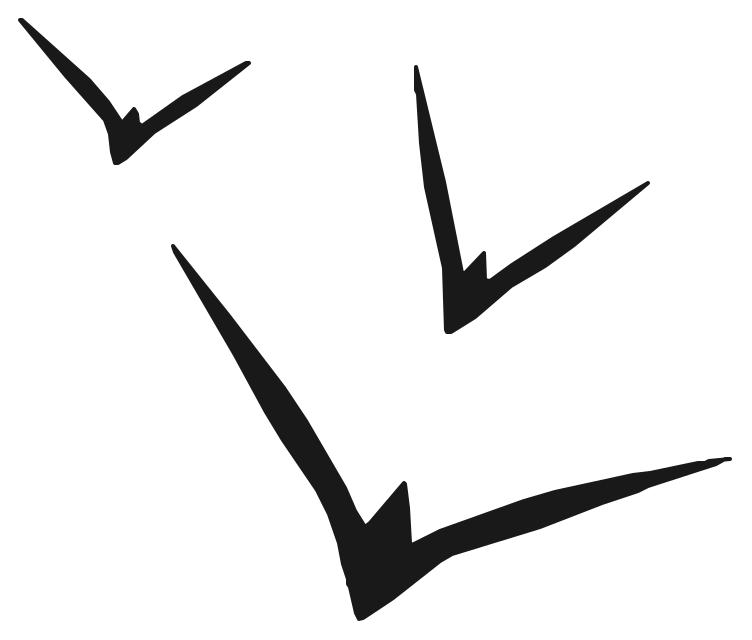

C301 (g), proposed. The Plan board becomes Tasks: a list of things to do, where a prompt to a model or a source is one kind of task, as every step is today, and your own to-do is another. A to-do is never sent: you tick it. A run that reaches one waits for you, and goes on when you tick it.
Everything a plan does now stays: lanes by letter (201a), runs, conditions, run:, stop:, diff:. One change to what is stored, in section 4. A timer, from C303, could be a third kind later.
The strip says Tasks: where it said Plan:. A list is numbered as a plan is (201), its lanes lettered (201a), each row a task. A prompt reads as now, with p>, who answers and how it went; a to-do of yours has a box, and reads as your words.

Room:Collection:Reflection:Records:Tasks: 201Import:Tour:Markup ▾Focus: offtick:201a 2 does, said under the bar and taken back by undo:. Its words are edited in place, as a ready prompt's are.new:tasks "Moving house", then new:todo for each. It runs nothing and costs nothing.A run goes down each lane as now. At a to-do not yet ticked, that lane waits; the other lanes go on. Tick it and the lane goes on, its next task under its own condition, as now. A to-do already ticked is passed, and one after a failed prompt can carry "when it fails", to fix what went wrong.
run: goes on from it.stop: stops a lane that waits for you, as any other; the to-do stays as it was.New commands for to-dos; today's plan commands stay, under the board's new name. The older names are still read.
| Command | What it does |
|---|---|
tasks: | Brings the Tasks board beside what is here. plan: is still read. |
new:tasks "Grant application" | A new list, numbered, with its first lane. new:plan is still read. |
new:todo "Check the figures" | A to-do at the end of the lane the bar points at; new:todo 201a "…" names the lane. |
tick:201a 2 | Ticks a to-do; tick:off 201a 2 unticks it. Refused on a prompt: it is done when its answer comes. |
new:step, run:, stop:, hold:, move:, delete:, diff: | As now. delete:201a 2 removes a to-do as it removes a step never sent. |
A task is a step, as now. A to-do is a step with one new field, holding its words and when it was ticked; its prompt stays empty.
{
id: "s-7c1e…",
status: "ready",
model: "claude-sonnet-5-5",
prompt: "Tighten it to a page…",
condition: null,
addedAt: "…"
}
{
id: "s-9a40…",
status: "ready",
model: null,
prompt: "",
todo: { text: "Check the budget figures with Anna",
doneAt: null },
condition: null,
addedAt: "…"
}
todo: optional; its text, your words, up to 2,000 characters, and doneAt, when it was ticked, or null. Ticked, its status is done, as a prompt's is once answered.prompt is empty on purpose: a run already passes over a step with no words, so an older Parliament restoring a newer backup, which drops todo, sees an empty step and never sends your to-do's words to anyone.todo. Backups carry it from this version on; one made before reads as now.new:run, unticked, as steps are now.tasks:), a numbered list (new:tasks), a row a task, lanes by letter as now; plan: and new:plan still read.todo on a step, its prompt left empty, as section 4 shows.new:todo and tick:, with the box on the board.